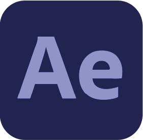

Perfil
um pouco sobre mim
Sou nascido e criado em Recife, PE. Sempre tive aptidão para desenho, música e outras habilidades criativas. Trabalho como videomaker desde 2014 e estou mudando para área de programação em busca de mudança de vida e novos horizontes profissionais.
Capacitação
Clique para saber mais
-
Educação
Ensino Superior Completo (2017)
Tecnólogo em Produção Publicitária UNIBRA
-
Curso de Aperfeiçoamento (2017)
Design Gráfico SENAC
-
Trajetória
-
UFPE (2017)
Professor de Oficina Audiovisual
-
UNISÃOMIGUEL (2018)
Cinegrafista; Editor de Vídeo
-
Secretaria de Educação e Esportes do Estado de Pernambuco (2014-2022)
Cinegrafista; Editor de Vídeo; Motion Graphics
-
ETE Cícero Dias (2021-2022)
Professor do Curso Técnico em Multimídia
-
Cardiopapers (2022-Atualmente)
Cinegrafista; Editor de Vídeo; Motion Graphics
-
-
Habilidades

Ensino Superior Completo
Tecnólogo em Produção Publicitária
UNIBRA (2017)
Curso de Aperfeiçoamento
Design Gráfico
SENAC (2017)
-
UFPE (2017)
Professor de Oficina Audiovisual
-
UNISÃOMIGUEL (2018)
Cinegrafista; Editor de Vídeo
-
Secretaria de Educação e Esportes do Estado de Pernambuco
(2014-2022)Cinegrafista; Editor de Vídeo; Motion Graphics
-
ETE Cícero Dias
(2021-2022)Professor do Curso Técnico em Multimídia
-
Cardiopapers
(2022-Atualmente)Cinegrafista; Editor de Vídeo; Motion Graphics